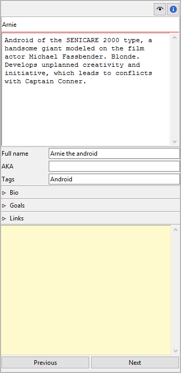
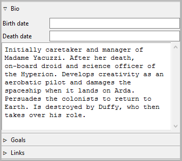
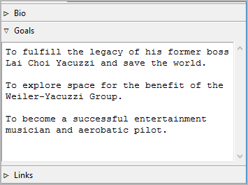
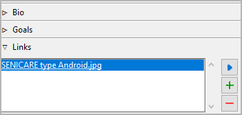
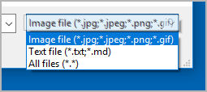
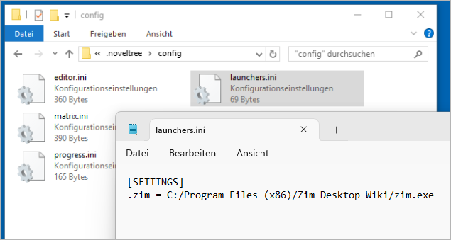

Character properties
The Character properties view opens in the right pane when you select a character in the tree.

Title and description
Title and description are displayed in an editable “index card”.
The editing of the title can be completed by pressing the Enter key.
Changes to the description are applied when the mouse is clicked
anywhere outside the text input field.
Full name
The character’s title as shown on the index card is used as
a short name at several places. The full name can be entered
separately. Editing can be completed by pressing the Enter key.
AKA
This entry field is for alias names. Editing can be completed
by pressing the Enter key.
Bio
Expand or collapse this frame by clicking on the label.

- Birth/death date
Format: YYYY-MM-DD, according to ISO 8601.
The editing of the birth and death dates can be completed by pressing the
Enter key. Changes to the bio are applied when the mouse is
clicked anywhere outside the text input field.
Goals
Expand or collapse this frame by clicking on the label.

Changes to the goals are applied when the mouse is clicked anywhere outside the text input field.
Hint
This text box can hold any character data that seem important to you. If “Goals” is not the right category for you, you can change the label in the book settings.
Links
Expand or collapse this frame by clicking on the label.

This is a list for image and research data links.
Although noveltree holds some character/location/item data, it is not the right application for extensive world building. For this, you may want to use more powerful software, like Zim Desktop Wiki. In this case, noveltree allows you to create links to the text files that will take you quickly to the right places in the wiki.
Or you have collected some images that could inspire you when writing. Then simply create links to these images to open them with your system’s standard image viewer.
Tip
If you have collected several images for a character in a folder that your standard image viewer can browse through, a single link to any image file is sufficient.
The links are displayed in a list in the order they are entered.
- Add Link
When clicking on , a file selection dialog opens. The selected file will be added to the link list.
Hint
By default, the dialog shows image files. For other file types, change the selector in the lower right corner.

Windows 10 Explorer screenshot
- Remove Link
When clicking on or pressing the
Delkey, the selected link is removed from the list.- Open Link
When double-clicking on a link, or clicking on
 ,
the link is opened with the standard application for the link’s file type.
,
the link is opened with the standard application for the link’s file type.Hint
If you want to open certain linked files with another application than the standard application, you can provide a noveltree “launcher” setting. For this, just create a text file named launchers.ini in the
.noveltree.configdirectory (where all configuration files are stored).This example shows a setting that makes noveltree open text files with the Zim Desktop Wiki application instead of the standard text editor:
[SETTINGS] .txt = C:/Program Files (x86)/Zim Desktop Wiki/zim.exe

Windows 10 Explorer screenshot
“Sticky note”
The yellow text area is for notes. Changes are applied when the mouse is clicked anywhere outside the text input field.
When the “sticky note” of a character contains text, an “N” is displayed in the tree view as a reminder.
Note
The “sticky notes” are only for working with noveltree. They are not meant to be exported into a document. However, they appear in the character list.